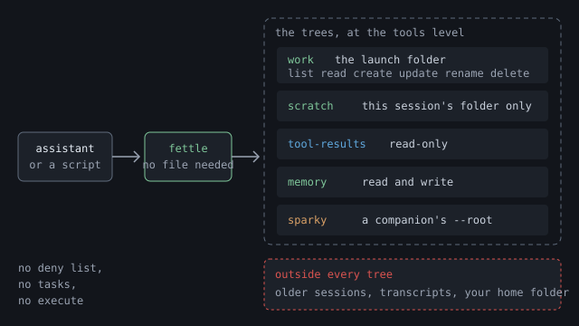

Shoddy · Fettler
The first level, on in every folder with nothing written down. Every verb, every check, and the folders your assistant already uses.
This page describes the tools level, which is always on and needs no file. Fettler does three kinds of work, and each kind is called a level. The tools level is the first one, and it gives you every verb, the checks that run on every call, and the folders your client keeps for this project. The client is the program your assistant runs in, such as Claude Code or VS Code. The other two levels, guardrails and screenings, stay off until a configuration file turns them on.
.fettler.json, is only for changing what this page describes, or for turning on the next two levels. Installing it covers the registration.
work. fettle also opens this session's scratch folder, the client's tool-results and memory folders, and the folder a companion server works in. Older sessions and the session transcripts stay outside, with everything else on the disk. setup tools denies the client's own file tools, so fettle is the route to a file. The shell stays open until guardrails.With no .fettler.json, the folder fettle starts in becomes the one tree you work in. That folder is called the launch folder. A tree is a folder Fettler may work in, together with the list of things it may do there. The program looks for the file in the launch folder and then in each folder above it, up to the top of the drive. If it finds none, you are at the tools level.
| At the tools level | What happens |
|---|---|
| The launch folder | It is one tree, called work. It is the default tree, so a path written with no tree name lands there. |
What work allows | list read create update rename delete. Every verb that reads or changes a file works inside it. |
| Running a task | A task is refused, because the tree does not grant execute and tasks belong to the guardrails level. |
| A path that climbs out of the launch folder | Refused as outside-root, exit 4. The words are the same whether or not the file exists. |
| The client's folders | Opened as three more trees, which the client's folders describes below. |
.fettler.json, that file decides the trees. Ignoring it would give the assistant more than somebody wrote down..fettler.local.json counts as the project file. If it sits in a folder with no .fettler.json beside it, fettle reads it as the project's file.--no-config skips the search for one command. fettle uses the tools level even if a file exists. --root PATH still opens one folder, read-only, for one command.The server looks for a file again on every call until it finds one. The server is fettle running as fettle serve, the form your assistant talks to. If you write a guardrails section into a new .fettler.json while it runs, the next call obeys it with no restart. Once the server has found a file, it re-reads that same file on each call.
The home page lists what went wrong with the old tools. Here is the same list with the answers fettle gives instead. Each example is the terminal form. The MCP answer carries the same facts as JSON, and the JSON form of read carries a hash for every file. A path in an answer names its tree, as work:src/Glob.cs, because more than one tree is almost always open.
Two patterns go in one call. Each hit comes back as the tree, the path, the line and the column, with the matched line under it. A hit inside a PDF names its page instead. A pattern of files that matched nothing says so, rather than looking like a search that found nothing.
$ fettle search "class Glob" "IGlob" --glob "src/**/*.cs"
work:src/Fettler/Glob.cs:12:21
12 | public sealed class Glob
work:src/Fettler/Glob.cs:31:9
31 | IGlob matcher = Build(pattern);
2 hits in 1 file
$ fettle search "TODO" --glob "src/**/*.ts"
0 files matched the glob; nothing was searchedThe first line gives the file's kind, encoding and line ending, and which lines of how many came back. A read that stops says how many lines are left and how to get them. A minified file, which is one enormous line, stops at the 40,000-character cap instead, and the answer says that too.
$ fettle read src/Fettler/Glob.cs --to 3
work:src/Fettler/Glob.cs text utf-8 lf final-newline: yes lines 1-3 of 212
1 | using System;
2 |
3 | namespace Fettler.Core;
... 209 more line(s); pass --from 4 to continue, or --to N for a rangeA read returns a hash of the file. An edit takes it back as expect. If anything changed the file in between, the edit is refused before a byte is written, with exit code 6, and the fix is to read again. An anchor that matches in more than one place is refused the same way, naming the edit, so an edit never lands in the wrong place.
$ fettle edit src/Fettler/Glob.cs --expect 6f1c... --replace "IGlob" --with "IMatcher"
refused: the file changed since it was read; read it again and rebuild the edit
$ echo $LASTEXITCODE
6Two writes are refused whatever the tree grants. A write that would add a secret names the line and the kind of secret, never the value. A write to a file that says what fettle or the assistant may do names the file.
$ fettle write config/app.json --text-file app.json
refused: this write would add a credential to the file: line 14 (aws-access-key-id).
$ echo $LASTEXITCODE
12
$ fettle write .fettler.json --text-file new.json
refused: .fettler.json is a file that says what this tool and the assistant may do.
$ echo $LASTEXITCODE
11These checks belong to the tools level, so they hold with no file at all. No configuration file can turn any of them off.
| Check | What it does |
|---|---|
| Paths stay in the trees | Every path must land inside a tree. There is no current folder to change, and no path can climb out of a tree. |
| The hash | read returns a hash of the file's content. Pass it as expect on an edit, and the edit is refused if the file changed since you read it. |
| The caps | A read stops at 2,000 lines or 40,000 characters, and the answer says how much it left out. A search stops at its limit and says so. A declared task keeps the last 40,000 characters of its output and says how much it left out. |
| The typed reads | Notebooks come back as cells, spreadsheets as rows with their formulas, Word files as paragraphs, and PDFs as text per page. |
| Generated folders | find and search skip bin, obj, .git, artifacts and node_modules unless you ask for them. |
| The credential check | A write that would add a secret, such as a cloud access key or a private key, is refused as credential, exit 12. The refusal names the line but never the secret. |
| The governed files | Fettler refuses to write any file that says what it or the assistant may do. The refusal is governed, exit 11, whatever a tree grants. |
The governed files are .fettler.json, .fettler.local.json, .mcp.json, .picker.json, .picker.local.json, .claude/settings.json, .claude/settings.local.json, .vscode/mcp.json and the machine file fettler/fettler.json. A person changes them in an editor. Fettler never writes its own rules explains why this one refusal makes every other rule hold.
Every verb in this table works at the tools level. Each one is a command on the command line and a tool your assistant can call. The verbs on the reference page gives each one's arguments and answers in full.
| Verb | What it does |
|---|---|
find | Lists the files that match a pattern, with the size and time of each one. |
search | Finds the lines that match one or more patterns, and gives each hit as its tree, path, line and column. |
read | Reads one or more files and returns the text with its encoding, line ending and hash. |
write | Creates a file, or replaces one when you say it may overwrite. |
edit | Applies a set of edits to one or more files. Either all of them apply, or none of them do. |
replace | Replaces one string with another in every file that matches a pattern. Either all files change, or none do. |
new | Creates an empty file, and refuses if a file of that name is already in that folder. |
mkdir | Creates a folder, along with any folders missing above it. |
move | Renames or moves a file or a folder, and says whether the move happened in one step. |
copy | Copies a file, or a whole folder when you ask for every file inside it. |
delete | Deletes one path. A folder that still holds files needs you to ask for everything inside it. |
extract | Unpacks a zip or tar archive into a tree, and refuses the whole archive if any part would land outside. |
exec | Sets or clears the executable bit, the mark that lets a file run as a program on macOS and Linux. |
batch | Runs several operations in order, and stops at the first one that fails. |
roots | Lists the levels that are on, then every tree with what it allows. |
doctor | Reports how fettle is wired into each client, with one section for each level. It changes nothing. |
Two more verbs, run and tasks, belong to the guardrails level. At the tools level they answer that no task is declared. Declaring tasks is on the next page.
fettle finds three of your client's folders and opens each one as a tree, with nothing declared. Your client keeps these folders for the assistant, outside your project. The assistant writes drafts in one, reads large answers back from another, and keeps notes in the third. An assistant that may use only Fettler would have nowhere to put a draft without them.
| Tree | What it is | It may |
|---|---|---|
scratch | This session's scratch folder, where the assistant stages drafts. On Windows it is <temp>\claude\<project>\<session>\scratchpad. On macOS and Linux it sits under /tmp/claude-<uid> instead. | list read create update rename delete, and never execute |
tool-results | Where the client saves a tool answer too large to show, then asks the assistant to read it back. It is ~/.claude/projects/<project>/<session>/tool-results, or the same name directly under the project folder. | list read |
memory | The client's memory folder for this project, where the assistant keeps notes between sessions. It is ~/.claude/projects/<project>/memory. | list read create update rename delete |
<project> is the launch path, spelled the way the client spells it. Each folder separator and the drive colon become a hyphen, so c:\github\app becomes c--github-app. A declared tree may not use the names scratch, tool-results or memory, because fettle gives those names to these folders.
Only this session's folder is opened, and fettle chooses it in a fixed order. A session is one conversation with the assistant, and the client gives each one its own folder.
roots says which of the two routes it took.tree:path, such as scratch:draft.md.roots says how each of these folders was found. Each one carries a found: line. For scratch it reads either this session's folder, named by the environment variable NAME or the newest session folder, because no environment variable names one. If you see the second line in a resumed conversation, check the folder before you trust it.
A companion is another MCP server that works in one folder you name. MCP is the protocol an assistant uses to call a tool server, and fettle is one such server. A companion's registration passes --root PATH, and that server reads and writes the files under that folder. sparky, the Shoddy calculator, is the usual case.
A server that passes no --root gets no tree. doctor lists these as servers without --root. To share files with one, add --root PATH to its registration. fettle then opens that folder as a tree named for the server.
fettle opens a companion's folder as a tree named for the server, with read and write. The assistant can already reach that folder through the companion, so the tree grants nothing new. It lets fettle write a file there that the companion loads in the same turn.
--root gets no tree. doctor lists it, and says that passing --root PATH would open one.At the tools level, doctor reports each companion's folder as one line of fact. It is never a finding here, because no tree states a rule that the companion could ignore. With guardrails on, a companion folder inside a declared tree becomes a serious finding, which the guardrails page explains.
Ask for the roots at the start of any session. At the tools level the trees section shows only work, the launch folder. The folders fettle found for itself come after it, each with its found: line. A level that is off prints off.
$ fettle roots
levels
tools on, always
guardrails off
screenings off
trees
work C:\github\app (default)
can: list read create update rename delete
branch: main (local)
found by fettle
scratch C:\Users\you\AppData\Local\Temp\claude\c--github-app\1f0c9a2e-5b7d-4c11-9e3a-7d2b8f6a4c10\scratchpad
can: list read create update rename delete
found: this session's folder, named by the environment variable NAME
tool-results C:\Users\you\.claude\projects\c--github-app\1f0c9a2e-5b7d-4c11-9e3a-7d2b8f6a4c10\tool-results
can: list read
found: in the client's folder for this project, in this session's folder; this session's folder, named by the environment variable NAME
memory C:\Users\you\.claude\projects\c--github-app\memory
can: list read create update rename delete
found: in the client's folder for this project
sparky C:\Users\you\Dropbox\shoddy\halifax
can: list read create update rename delete
found: the --root of the sparky server registered in C:\Users\you\.claude.json
declared by no .fettler.json, so the launch folder is the treeroots --json says the same in a form a script can read. It has a levels object, such as {"tools":{"on":true,"from":[]},"guardrails":{"on":false,"from":[]}}, and a found field on each tree fettle opened itself.A tools section changes four things about the tools level, and nothing else. You need it only when fettle's own choices are wrong for this machine or this project. Writing it does not turn on guardrails. The caps, the hashes and the readers are fixed, and no file can change them.
| Key | What it does |
|---|---|
generated | Names the folders that find and search skip. It replaces the built-in list, so repeat any of the five you still want skipped. |
scratch | Names a folder to open as scratch, in place of the one fettle would choose. Use it when your client keeps its scratch somewhere fettle does not look. |
scratch-root | Names the folder that holds every project's scratch folders. fettle looks for this project's folder inside it. |
client-root | Names the folder that holds the client's folder for each project. When you leave it out, fettle uses ~/.claude/projects. |
A path in the file is read from the folder the file sits in. A path that is a fact about one machine, such as scratch, belongs in .fettler.local.json. That is the uncommitted file beside the project file, and the personal overlay describes how it merges.
This project builds into a dist folder, so its file adds that folder to the list. On the left is the whole file. On the right is what roots says with it in place. Notice that guardrails are still off, and that the tools line now names the file.
// C:\github\app\.fettler.json
{
"tools": {
"generated": ["bin", "obj", ".git",
"artifacts", "node_modules",
"dist"]
}
}$ fettle roots
levels
tools on, always; settings from C:\github\app\.fettler.json
guardrails off
screenings off
trees
work C:\github\app (default)
can: list read create update rename delete
branch: main (local)
found by fettle
scratch C:\Users\you\AppData\Local\Temp\claude\...\scratchpad
...
memory C:\Users\you\.claude\projects\c--github-app\memory
...
declared by C:\github\app\.fettler.jsonThe trees are the same as with no file, because a tools section declares no tree. Only a guardrails section does that, and the next page shows one.
The machine file holds facts about one machine, and they apply to every project on it. On Windows it is %APPDATA%\fettler\fettler.json. On macOS and Linux it is ~/.config/fettler/fettler.json, or the same path under $XDG_CONFIG_HOME when that is set.
tools section and a screenings section. A models directory shared by every project is the usual entry.guardrails section in it stops fettle loading. A tree, a task or an execute grant there would apply to every project, and no project reviewed it.~/.fettler.json. The search upward from a project would find that name and take your whole home folder as the tree.roots and doctor name it whenever it supplied something.| You want | Page |
|---|---|
| To declare your own trees, scopes and tasks, and close the client's built-in tools | Guardrails |
| To refuse answers that would disclose regulated data | Screenings |
| Every verb's arguments, every refusal, and every exit code | Reference |